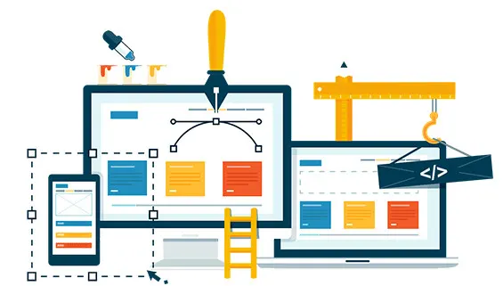
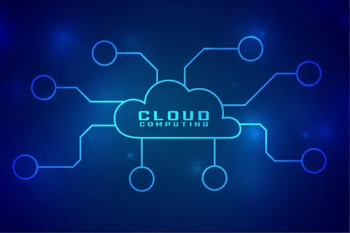

Suporte Técnico
Atendimento remoto ou presencial para resolver problemas em computadores, redes e sistemas operacionais. Rápido, eficaz e sem complicações.
Criação de Sites Profissionais
Desenvolvimento de sites modernos, responsivos e personalizados, com foco em performance, visual e presença digital forte para empresas.
Manutenção e Montagem de Computadores
Serviço completo de diagnóstico, limpeza, troca de peças, upgrades e montagem de máquinas sob medida para o seu uso pessoal ou empresarial.
Segurança da Informação
Implementação de antivírus corporativos, backups automáticos, firewall e boas práticas para proteger seus dados e sistemas contra ameaças.
Soluções em Nuvem
Configuração e gerenciamento de ferramentas como Google Workspace, OneDrive, backup em nuvem e ambientes colaborativos online.
Consultoria em TI
Análise técnica e estratégica para empresas que querem crescer com a ajuda da tecnologia. Ajudamos a montar infraestrutura, sistemas e rotinas de TI sob medida.